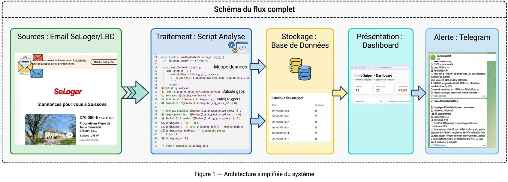
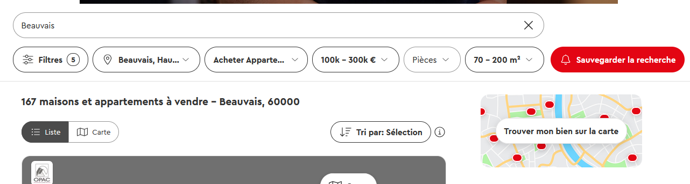
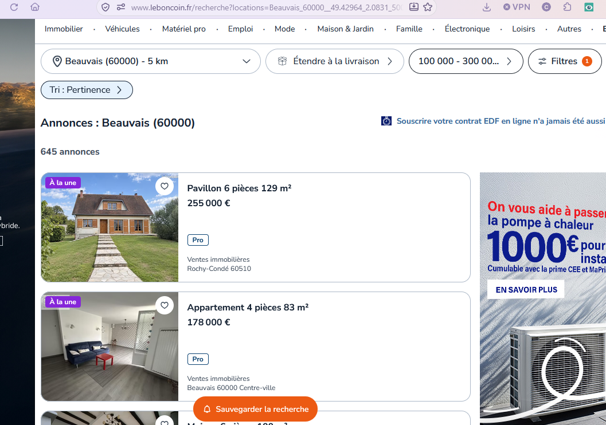
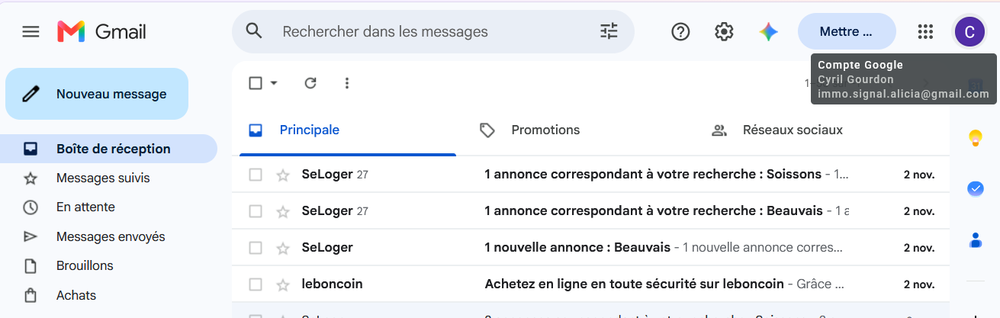
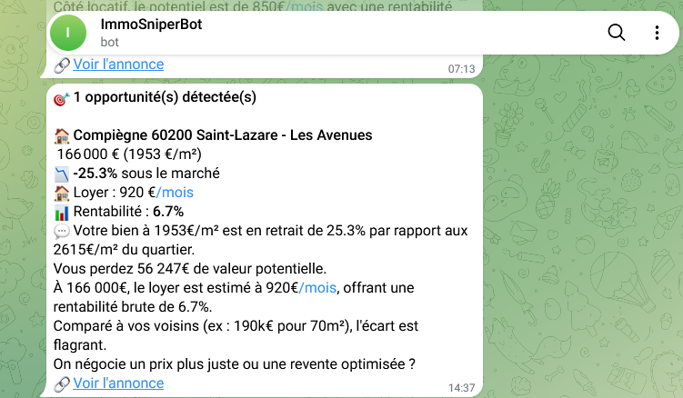
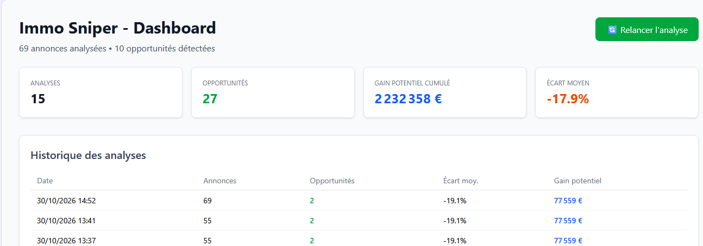
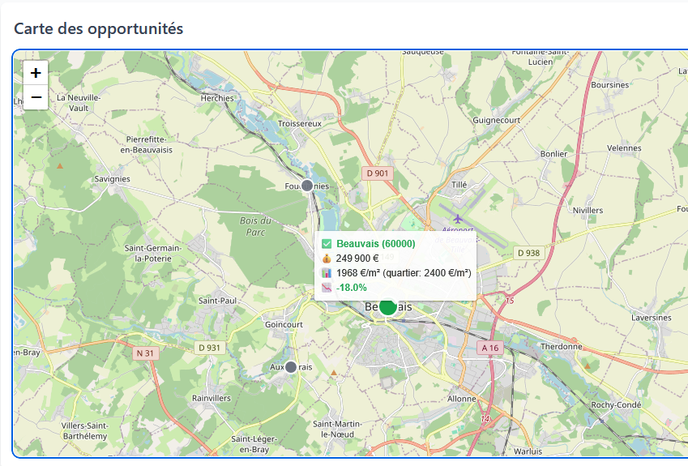
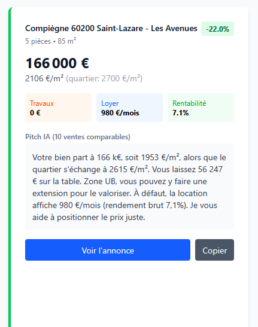

👋 Bienvenue
Immo Sniper est un assistant qui surveille le marché immobilier pour
vous. Il analyse automatiquement les annonces, les compare aux ventes
réelles du quartier, et vous alerte
uniquement sur les bonnes affaires.
Ce guide vous explique comment configurer et utiliser l'outil au
quotidien.
💡 Qu'est-ce qu'une solution PropTech ?
PropTech (contraction de Property et Technology) désigne les outils qui utilisent la technologie pour transformer le marché immobilier traditionnel.
Immo Sniper est une solution PropTech car elle combine trois innovations :
- Automatisation : la collecte et l'analyse des annonces se font 24h/24 sans intervention humaine
- Intelligence Artificielle : analyse des photos, estimation des loyers, interprétation des règles d'urbanisme (PLU) et rédaction de pitches commerciaux
- Data géospatiale : croisement de la position GPS d'une annonce avec les ventes réelles du quartier (base DVF) et les zones d'urbanisme via PostGIS
✅ En résumé : Immo Sniper transforme des données immobilières brutes et dispersées en décisions d'investissement actionnables en quelques secondes. C'est exactement ce que les investisseurs, chasseurs immobiliers et agents recherchent aujourd'hui pour prendre de l'avance sur leurs concurrents.
️ Comment ça marche
Le système fonctionne en 4 étapes automatiques :
-
Collecte — Les alertes email SeLoger et Leboncoin
sont lues automatiquement
-
Analyse — Chaque annonce est comparée aux ventes
réelles du quartier (base DVF)
-
Qualification — Rentabilité, travaux, PLU et pitch
IA sont calculés
-
Alerte — Vous recevez une notification Telegram +
email si opportunité détectée

Figure 1 — Architecture simplifiée du système
📬 Étape 1 — Configurer vos alertes SeLoger et Leboncoin
Immo Sniper se nourrit des alertes email que vous créez sur SeLoger et
Leboncoin. C'est la source de données du système.
Sur SeLoger
1
Allez sur
seloger.com et
lancez une recherche avec vos critères (ville, type de bien, prix
max, surface min).
2
Cliquez sur "Créer une alerte email" en haut de la
page de résultats.
3
Entrez l'adresse email de votre boîte Gmail dédiée (ex:
immo.sniper@gmail.com).

Figure 2 — Créer une alerte SeLoger
Sur Leboncoin
1
Allez sur
leboncoin.fr
→ Catégorie "Ventes immobilières" → Filtrez par département et
critères.
2
Cliquez sur "Sauvegarder la recherche" puis activez
les notifications email.

Figure 3 — Créer une alerte LeBonCoin
💡 Conseil : Créez plusieurs alertes avec des
critères différents (maison/appartement, différentes villes,
différentes fourchettes de prix) pour couvrir un maximum
d'opportunités.
📧 Étape 2 — Configurer Gmail
Nous recommandons d'utiliser une
boîte Gmail dédiée (ex:
immo.sniper@gmail.com) pour recevoir uniquement les
alertes immobilières. Cela évite de polluer votre boîte principale.
Créer un filtre automatique
1
Dans Gmail, cliquez sur l'icône de recherche avancée (les sliders à
droite de la barre de recherche).
2
Dans le champ "De", entrez :
contact@seloger.com OR alertes@leboncoin.fr
3
Cliquez sur
"Créer un filtre" puis cochez :
- ✅ Appliquer le label "Immo Sniper"
- ✅ Archiver (ignorer la boîte de réception)
- ✅ Marquer comme important

Figure 4 — Boîte Gmail avec le label "Immo
Sniper" appliqué
💡 Pourquoi une boîte dédiée ? Immo Sniper a besoin
d'accéder à votre boîte mail pour lire les alertes. Utiliser une boîte
dédiée limite les risques et garde votre boîte personnelle privée.
📱 Étape 3 — Recevoir les alertes sur Telegram
Telegram est le canal le plus rapide pour recevoir
les opportunités. Une notification arrive sur votre téléphone en
quelques secondes après détection.
Configuration en 3 minutes
1
Installez
Telegram sur
votre téléphone si ce n'est pas déjà fait.
2
Dans Telegram, cherchez le bot @BotFather et
envoyez-lui la commande /newbot. Suivez les
instructions pour créer votre bot (nom + username).
3
BotFather vous donne un token (ex:
123456789:ABCdefGHI...). Copiez-le.
4
Envoyez un message à votre nouveau bot (cherchez-le par son
username). Puis récupérez votre Chat ID en visitant
: https://api.telegram.org/bot[VOTRE_TOKEN]/getUpdates
5
Ajoutez le token et le Chat ID dans le fichier .env de
l'application.
Figure 6 — Création du bot Telegram via BotFather

Figure 7 — Exemple de notification Telegram
✅ Avantage Telegram : Les notifications arrivent
instantanément sur votre téléphone, même en déplacement. Vous pouvez
agir en quelques minutes, avant les autres acheteurs.
️ Étape 4 — Utiliser le dashboard
Le dashboard est accessible à l'adresse
http://localhost:3000 (ou l'URL de votre serveur). Il
centralise toutes les analyses.
Les 4 indicateurs en haut
| Indicateur |
Signification |
| Analyses |
Nombre de fois où le script a tourné |
| Opportunités |
Nombre total de biens sous-évalués détectés |
| Gain potentiel cumulé |
Somme des plus-values théoriques (prix quartier − prix annonce) ×
surface
|
| Écart moyen |
Écart moyen en % entre prix des annonces et prix du quartier
|

Figure 8 — Les indicateurs clés du dashboard
La carte des opportunités
La carte affiche toutes les annonces géolocalisées :
-
🟢 Points verts = opportunités sous-évaluées (écart
< -10%)
- Points gris = annonces au prix du marché
Survolez un point pour voir un résumé (adresse, prix,
prix/m²).
Cliquez sur un point pour voir le détail complet
(rentabilité, PLU, lien annonce).

Figure 9 — La carte interactive avec popup détaillé
La liste des annonces
Sous la carte, chaque annonce est affichée sous forme de carte avec :
- Prix, surface, nombre de pièces
- Écart vs le marché (en %)
-
3 mini-cartes colorées :
Travaux
(orange),
Loyer (bleu),
Rentabilité
(vert)
- Le pitch IA rédigé automatiquement
- Un bouton "Copier" pour envoyer le pitch au propriétaire

Figure 10 — Détail d'une opportunité avec rentabilité
📖 Étape 5 — Lire une opportunité
Quand vous recevez une alerte, voici comment interpréter les
informations :
| Information |
Comment la lire |
| Écart vs marché |
-27.9% signifie que l'annonce est 27.9% moins chère
que la moyenne du quartier. Plus le chiffre est négatif, plus
l'affaire est intéressante.
|
| Gain potentiel |
C'est la plus-value théorique si vous revendez au prix du
quartier. À prendre comme un ordre de grandeur, pas une promesse.
|
| Rentabilité brute |
(Loyer × 12) / (Prix + Travaux) × 100. Au-dessus de
6% = bon investissement locatif.
|
| Zone PLU |
UA = centre-ville dense, UB =
résidentiel avec extensions possibles, 1AU =
constructible à moyen terme.
|
| Pitch IA |
Message prêt à envoyer au propriétaire. Personnalisez-le avant
envoi.
|
️ Attention : Un écart important peut cacher un vice
(travaux lourds, nuisance, copropriété en difficulté). Le pitch IA est
un point de départ, pas une vérité absolue. Vérifiez toujours sur
place.
Étape 6 — Agir vite
Les meilleures affaires partent en moins de 2 heures.
Voici la marche à suivre :
-
Réception de l'alerte Telegram → Ouvrez-la
immédiatement
-
Vérification rapide → Cliquez sur le lien de
l'annonce, regardez les photos
-
Copie du pitch → Sur le dashboard, cliquez "Copier"
sous le pitch IA
-
Contact propriétaire → Adaptez le message et
envoyez-le (SMS, email, ou via la plateforme)
- Visite → Proposez un créneau dans les 24h
✅ Astuce pro : Préparez un template de message dans
votre téléphone avec le pitch type. Quand l'alerte arrive, vous n'avez
plus qu'à personnaliser 2-3 détails et envoyer.
⚙️ Annexe Technique : Automatiser l'analyse (Planificateur de tâches)
Pour que le système détecte les opportunités sans intervention
manuelle, il est recommandé de programmer l'exécution du script
d'analyse à intervalles réguliers.
Sur Windows (Planificateur de tâches)
1
Appuie sur Win + R, tape taskschd.msc et
appuie sur Entrée.
2
Clic droit sur Bibliothèque du Planificateur →
Créer une tâche...
3
Onglet Général : Nomme-la "ImmoSniper-Analyse" et
coche "Exécuter avec les autorisations maximales".
4
Onglet Déclencheurs → Nouveau → Débuter la tâche :
"Selon un programme". Règle-la pour qu'elle se répète toutes les
1 heure (ou 3 fois par jour : 8h, 12h, 18h).
5
Onglet
Actions → Nouvelle action :
-
Programme/script :
C:\Users\claud\AppData\Roaming\npm\npx.cmd (adapte
le chemin si nécessaire)
-
Ajouter des arguments :
tsx scripts/detect-opportunities.ts --send-email
- Démarrer dans :
C:\Users\claud\immo2-sniper
6
Onglet Conditions : Coche "Exécuter la tâche même
si l'ordinateur est sur batterie".
💡 Conseil : Ne lance pas le script toutes les 15
minutes si tu utilises la version gratuite de Groq (limite de 200 000
tokens/jour). Un lancement à 8h, 12h et 18h est un excellent compromis
entre réactivité et économie de tokens.
Sur Linux / VPS (Cron)
Si tu déploies l'application sur un serveur Linux, ouvre le cron avec
crontab -e et ajoute :
# Lancer l'analyse à 8h, 12h et 18h tous les jours
0 8,12,18 * * * cd /home/user/immo2-sniper && npx tsx scripts/detect-opportunities.ts --send-email >> /var/log/immo-sniper.log 2>&1
❓ Questions fréquentes
Pourquoi certaines annonces n'ont pas de point sur la carte ?
Les annonces extraites depuis les emails n'ont pas toujours de
coordonnées GPS précises. Elles apparaissent dans la liste mais pas
sur la carte. Un script de géocodage peut être lancé pour corriger ça.
Le "gain potentiel" est-il réaliste ?
C'est une estimation théorique basée sur le prix moyen du quartier. En
pratique, la revente au prix du quartier dépend de l'état du bien, du
marché local, et du timing. Utilisez-le comme
ordre de grandeur, pas comme garantie.
Pourquoi je ne reçois pas d'alertes Telegram ?
Vérifiez dans l'ordre :
- Le bot Telegram a-t-il bien été créé ?
-
Avez-vous envoyé au moins un message au bot (pour l'activer) ?
-
Le token et le Chat ID sont-ils corrects dans le fichier
.env ?
-
Y a-t-il des opportunités détectées ? (sinon, pas d'alerte envoyée)
Comment ajouter une nouvelle ville ?
Créez simplement une nouvelle alerte email sur SeLoger ou Leboncoin
avec la ville souhaitée. Le système la détectera automatiquement au
prochain cycle d'analyse.
À quelle fréquence le système analyse-t-il les annonces ?
Par défaut, l'analyse se lance manuellement via le bouton "Relancer
l'analyse" du dashboard, ou automatiquement via un cron job (configuré
sur le serveur).
Besoin d'aide ?
Si vous rencontrez un problème ou souhaitez adapter l'outil à vos
besoins spécifiques, contactez l'administrateur du système.
Le code source est disponible sur le dépôt GitHub du projet.